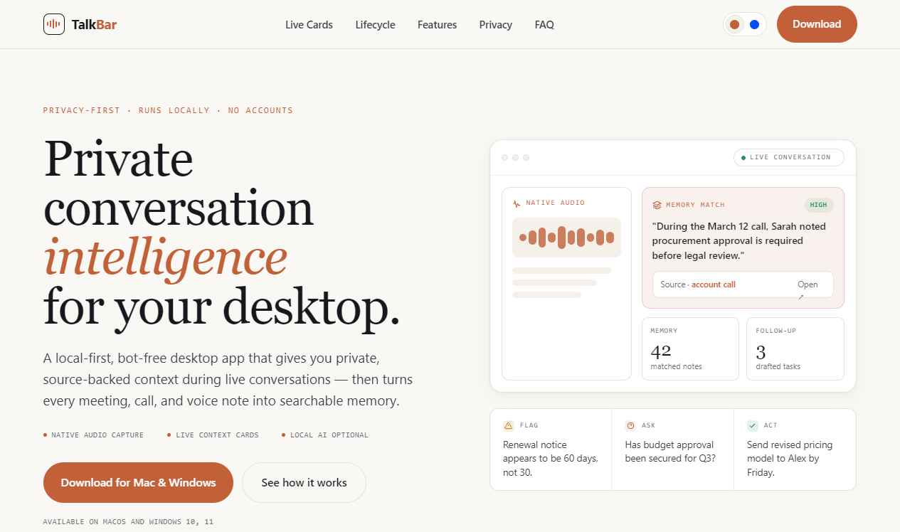
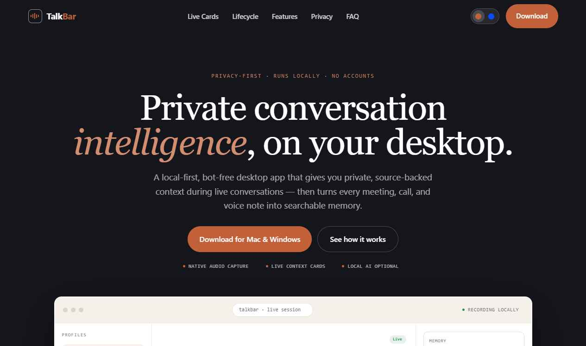
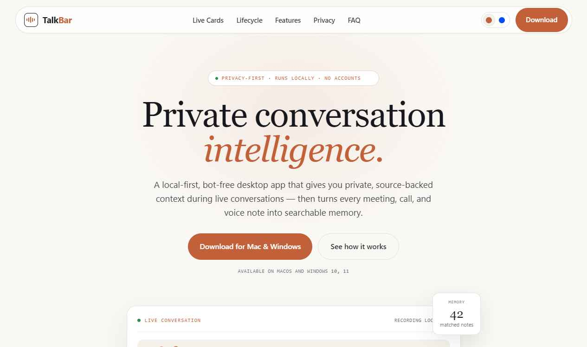
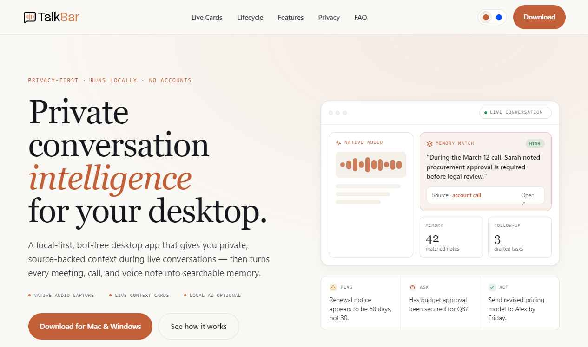
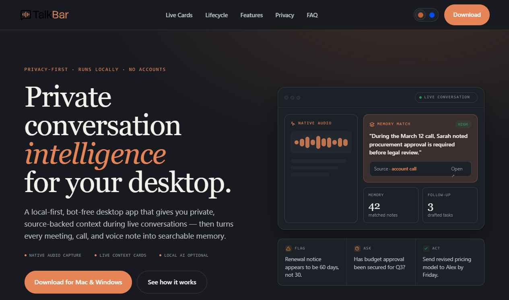

Five takes on a flat, professional, gradient-free redesign — all sharing one refined serif system, the same copy, and a warm ↔ blue theme switch in every header. Toggle the theme here and it carries into each page. Pick a direction and we'll apply it across the rest of the site.

A calm, high-end editorial layout. Numbered sections, generous whitespace, hairline rules, and a left-aligned serif voice. The most restrained and magazine-like.

A confident SaaS feel. A dark ink hero and CTA bookend white, crisply-gridded sections, with a full product dashboard mockup floating into view. The most product-led.

Warmer and more approachable. A centered hero with floating cards, soft tinted section bands, the five lifecycle pillars, and a bold full-color CTA. The most inviting.

Full-bleed sections that alternate between light paper and deep ink, with a full-width header and footer. Bold rhythm and contrast — the most dynamic to scroll.

A dark-first, premium feel. Most sections sit on deep ink with glowing accents, broken up by light “relief” bands. Full-width header and footer. The most striking.